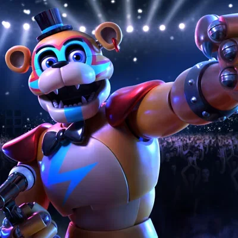
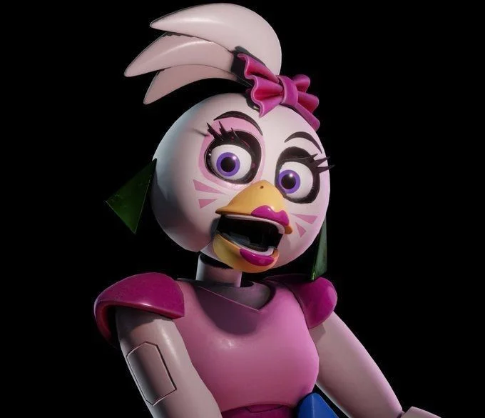
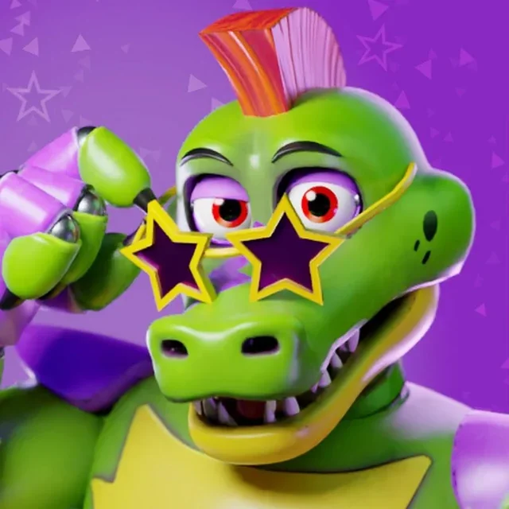
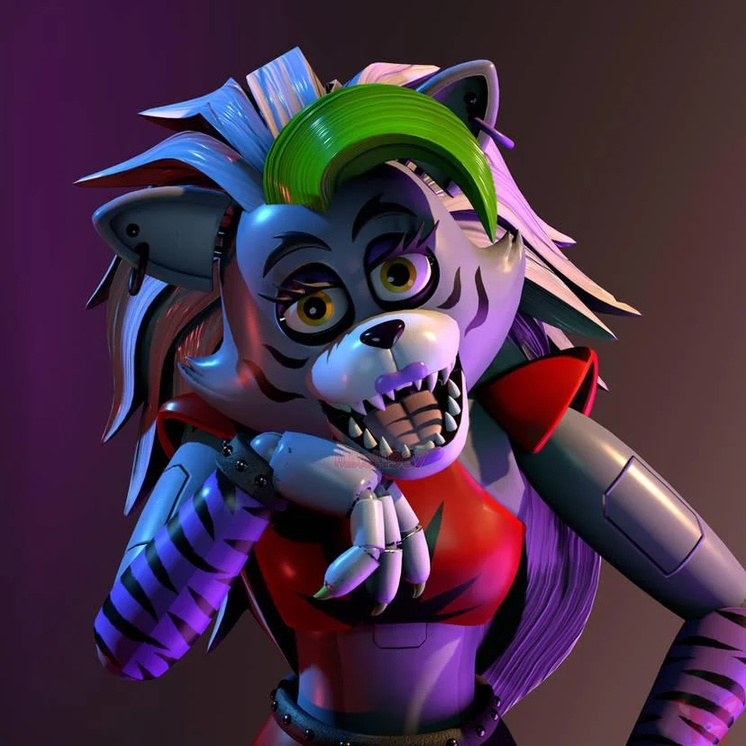
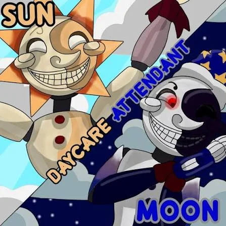
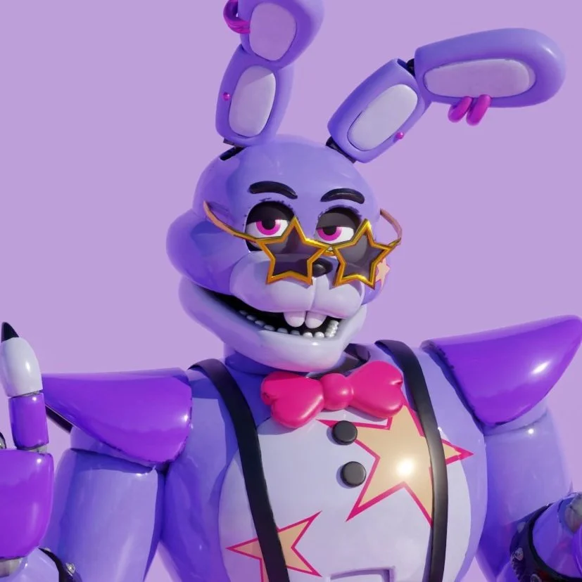

Novo estabelecimento
Apesar de todos os problemas enfrentados com as lendas urbanas, nós da Fazbear Entertainment não nos deixamos abalar. Diante disso, criamos um shopping cheio de tecnologia, diversão e é claro muita pizza. O Freddy Fazbear's Mega Pizzaplex é um lugar com o entretenimento de mais alto nível como:
Bonnie Bowl
Superstar Daycare
Fazer Blast
Roxy Raceway
Monty's Gator Golf
Mazercise
Linha Glamrock
Além desses espaços maravilhosos, nós também criamos uma nova linha de animatronics que possui uma inteligência artificial autônoma em que os animatronics conseguem conversar com as pessoas e ir aonde eles quiserem, além de fazer um show de arrasar. Além disso, para ter uma maior imersão dos nossos clientes com os animatronics, cada lugar de entretenimento é tematizado de acordo com o animatronic.
"Caso seu animatronic apresenta falhas de personalidade como se estivessem controlando eles, o comando reset_ia(glamrock_model) pode ser executado nos terminais de serviço"
| Animatronic |
Atração Principal |
Status Operacional |
| Glamrock Freddy |
Fazer Blast |
Ativo e Seguro |
| Glamrock Chica |
Mazercise |
Ativa |
| Montgomery Gator |
Monty's Gator Golf |
Ativo (Comportamento Agressivo) |
| Roxanne Wolf |
Roxy Raceway |
Operando normalmente |
| Daycare Attendant (Sun/Moon) |
Superstar Daycare |
Ativo (Manter luzes acesas) |
| Bonnie the Bunny |
Bonnie Bowl |
Fora de serviço ("Aposentadoria estratégica") |

Glamrock Freddy

Glamrock Chica

Montgomery Gator

Roxanne Wolf

Sun/Moon (Daycare)

Glamrock Bonnie